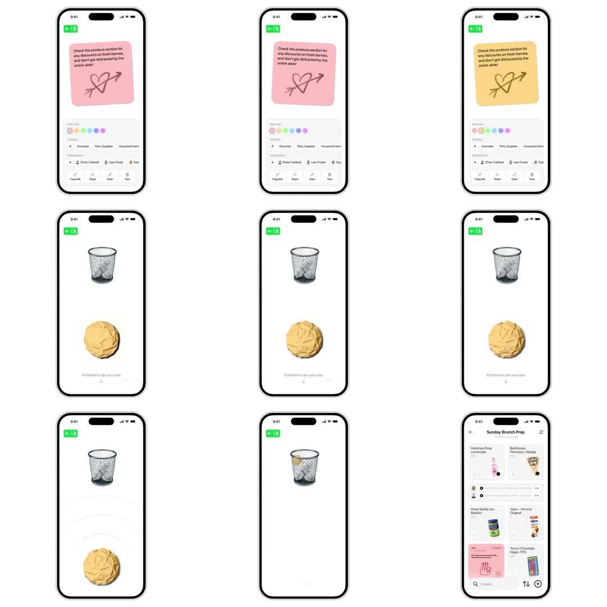

Toss your note to the bin: a playful way to delete a note - the sticky note ('Check the produce section for any discounts...' with a heart-arrow scribble, color pickers below) crumples into a paper ball when you pull down; the screen turns into a wire-mesh trash can with 'Pull down to aim your toss'; release flings the ball along an arc into the bin with a satisfying dunk; then cuts back to the notes grid ('Sunday Brunch Prep').
Media
Frame-by-frame

0-20%
Note editor: pink sticky with text + scribble, color swatch row, tag chips, copy/share/draw/trash actions.
20-40%
Note crumples: the flat sticky morphs into a crumpled yellow paper ball (crinkle texture) as user pulls down; scene swaps to a sketched wire trash can on a white field.
40-70%
Aiming: ball hangs near the bottom, bin above; 'Pull down to aim your toss ↓' hint; ball sways with the drag.
70-90%
Release: ball arcs up along a parabola and drops into the mesh bin (slight rim bounce, bin jiggle).
90-100%
Cut back to the notes list/grid (grocery cards: Fentimans Rose Lemonade, BellGioso Parmesan...) - note gone.
Build prompt
Rebuild this interaction 1:1: "toss your note to the bin" - a playful pull-down-to-delete gesture in an iPhone notes app. Pull down and the sticky note crumples into a paper ball; the scene swaps to a sketched wire-mesh trash can; release flings the ball on a ballistic arc into the bin with a rim bounce and bin jiggle; then cut back to the notes grid, note gone.
## Integration
Integration: stack-agnostic spec - springs given as stiffness/damping, timed motions as duration + curve, canvas/shader notes are perf guidance only; map every value to your framework and animation library of choice.
## Scene
iPhone-frame note editor: pink sticky note card (radius 16, rotation -1deg, hand-drawn heart-arrow scribble, note text), color swatch row, tag chips, bottom action bar (copy/share/draw/trash). Toss scene: white field, sketched grey wire-mesh trash can upper-center (line-art, slight 3D tilt ~10deg), hint text "Pull down to aim your toss" 12px zinc-400.
## Motion spec
Pattern: gesture-driven with ballistic release.
- Crumple (drag 0 -> 60px): crossfade to the white toss scene, 200ms. Note border-radius 16 -> 50%, scale 1 -> 0.45, crinkle texture overlay fades in, random +/-2deg rotation jitter keyed to drag distance. All crumple progress is tied directly to drag y (scrubbed, not timed).
- Aim (drag held past 60px): ball sticks to the finger with rubber-band factor 0.85 (ball lags the finger 15%); "aim" hint pulses opacity 1 -> 0.5 -> 1 on a 1.2s loop; ball sways with horizontal drag.
- Release: compute velocity from the last 100ms of drag; launch the ball on a 2D projectile arc (gravity 2400px/s2) toward the bin mouth, ~700ms flight. On entry the ball scales into the bin (clip), the bin jiggles (rotate +/-4deg, spring stiffness 400 damping 12, ~600ms), small "puff" opacity burst at the rim.
- Finish: hard cut (no transition) back to the notes grid; the deleted card is already gone.
## Calibration
- The crumple is scrubbed to the finger - no independent timing; that directness is what makes it feel physical.
- Toss duration comes from real projectile math, not a fixed keyframe; a weak flick should still land (aim assist: clamp the arc to the bin mouth within +/-20deg).
- Bin jiggle is the payoff - springy and brief, under 700ms.
## Reduced motion
Pull-down shows a static "release to delete" state; on release the ball fades into the bin (opacity only, 200ms), no arc, no jiggle.
## Don't miss
- The scene swap happens at the 60px threshold, mid-gesture, not on release.
- The ball lags the finger slightly (rubber-band) - a 1:1 stick feels dead.
- The return to the notes grid is a hard cut after the dunk, not a crossfade; the contrast is the joke landing.
Mechanics
trigger
pull-down gesture + release
elements
sticky note, crumple morph, paper ball, wire bin, aim hint
properties
crumple progress (scale/skew/noise), drag y -> aim angle/power, release arc (gravity sim), bin jiggle